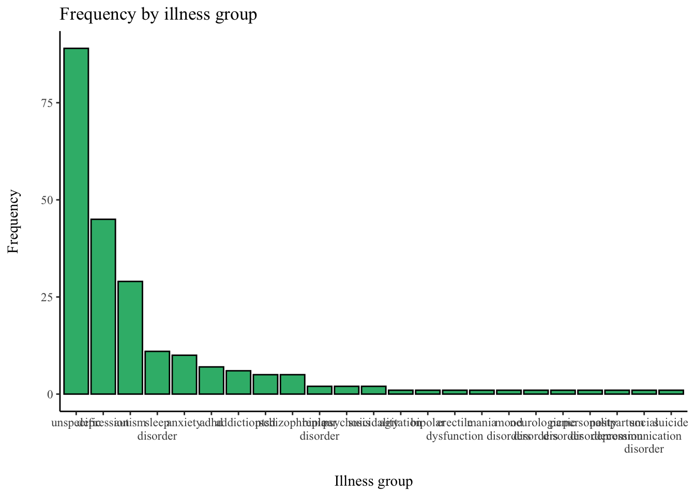
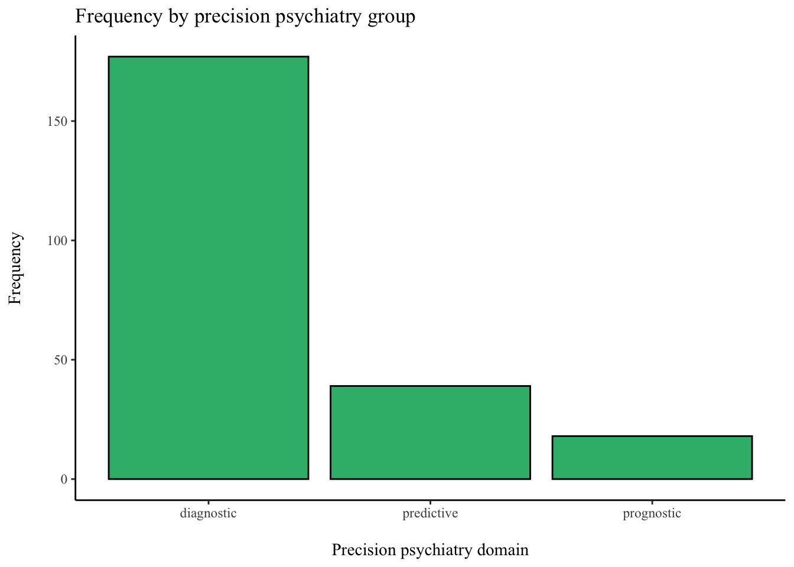
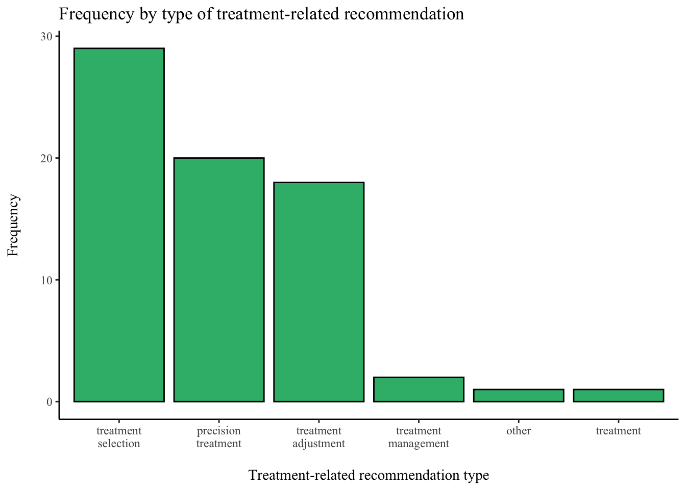
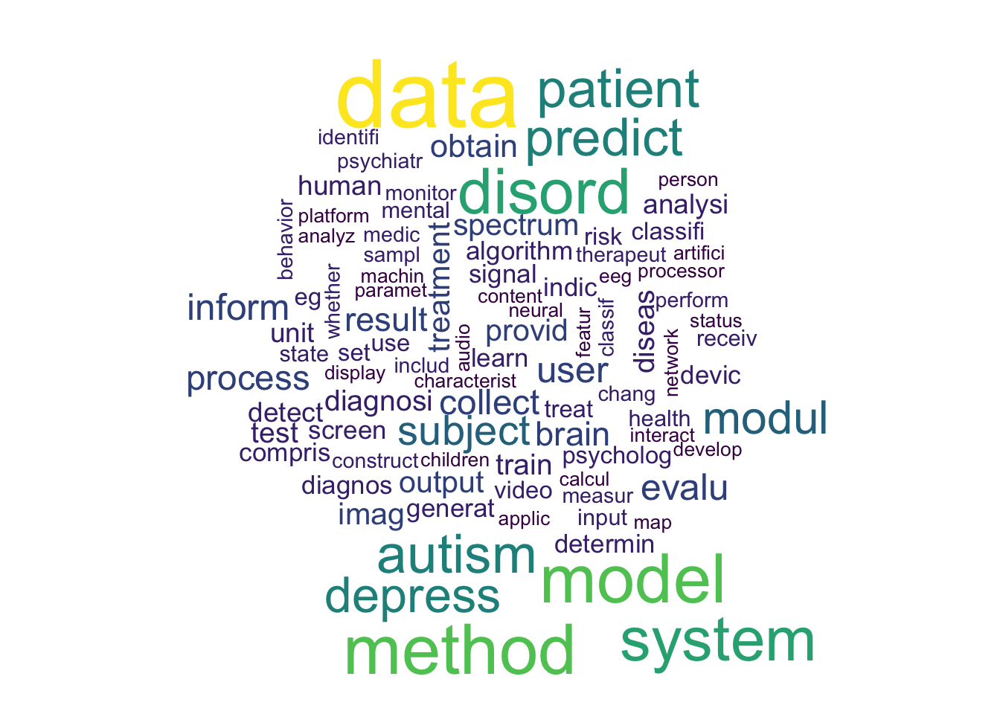
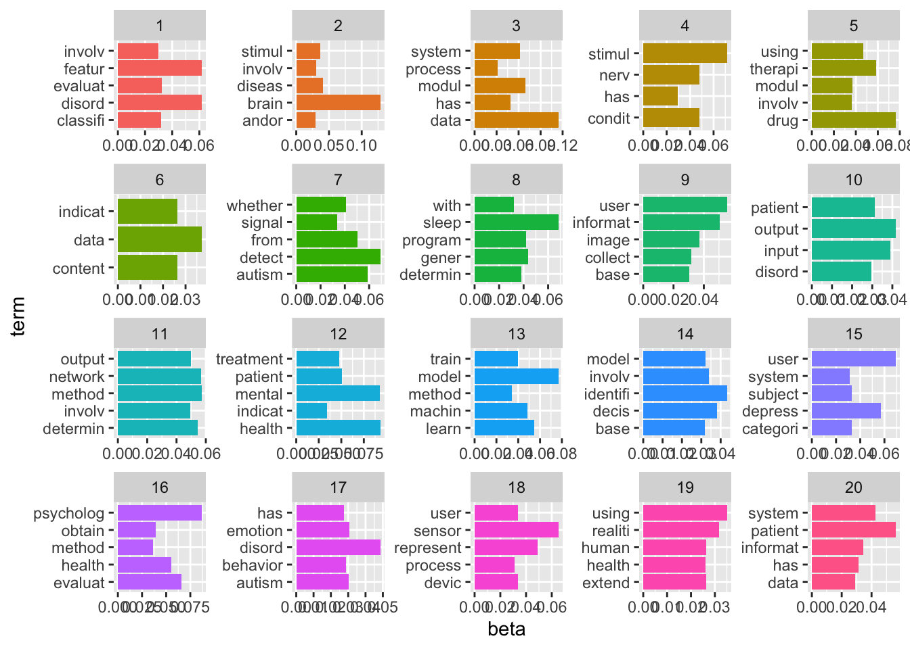

## Read in data
library("readxl")
data <- read_excel("../../data/Search_results/2022-11-04_exported.xlsx", sheet = "Sheet1")Current Trends of Artificial Intelligence Patents in Precision Psychiatry: A Systematic Evaluation of the Patent Landscape
Introduction
Much of the difficulty in treating mental illnesses may be attributed to the poor knowledge we have about the pathophysiology of mental disorders. Symptoms overlap between multiple diseases, and symptom severity or presence may vary significantly among patients falling into one diagnostic category (Fernandes et al. 2017; Kendler 2016; Newson, Hunter, and Thiagarajan 2020). Consequently, individuals suffering from mental illnesses are often treated for months or even years before receiving appropriate medication or adequate psychotherapeutic support (Bzdok and Meyer-Lindenberg 2018). For example, only about one-third of major depressive disorder patients experience a remission of symptoms after the initial treatment with antidepressants. One-third respond after an increased dosage or a supplemented therapy, and one-third experience no improvement in symptoms before discontinuing the treatment Souery et al. (2011). These changes in treatment regimens or ineffective treatment may impact patients’ quality of life and lead to high healthcare costs (Zanardi et al. 2021).
Precision psychiatry offers remedies against the trial-and-error approach in mental healthcare. Analogous to precision medicine, precision psychiatry takes individual variability in biological, environmental, and lifestyle into account to make adequate treatment recommendations (Fernandes et al. 2017; Salazar de Pablo et al. 2021). In contrast to the conventional goal of psychiatric research to develop new treatments effective for a majority of patients, precision psychiatry shifts the focus to the precise selection of an existing therapy for a single patient or small groups of patients (Rush et al. 2006; Bzdok and Meyer-Lindenberg 2018; Fernandes et al. 2017). For example, a specific antidepressant may be more effective for one patient than another, even if both suffer from major depressive disorder (Adam Mourad Chekroud et al. 2016). Similarly, specific psychotherapeutic treatment strategies may be more or less effective for different patients (Lutz et al. 2022). By using information from multiple sources (e.g., biological markers, brain imaging, physiological records, environmental exposures, demographic information, and self-reported experience), precision psychiatry facilitates understanding complex disease mechanisms that are difficult to reconstruct using traditional diagnostic instruments alone (Fernandes et al. 2017; Salazar de Pablo et al. 2021). Sophisticated modeling techniques may be applied to predict mental conditions being present (diagnostic approach), the development of a condition in the future (prognostic approach), and the response to a specific treatment (predictive approach) at the individual subject level (Salazar de Pablo et al. 2021). Even moderately successful models offer starting points for treatment selection, thus solving some problems associated with conventional trial-and-error treatment approaches (Bzdok and Meyer-Lindenberg 2018).
The task of deriving individual-level predictions may be accomplished particularly well using artificial intelligence (AI) through machine learning (ML) (Bzdok and Meyer-Lindenberg 2018). Ml algorithms can be used to identify complex patterns in observational data to predict quantitative (e.g., symptom severity) and categorical (e.g., disease subgroups) phenotypes in clinical settings. ML models often apply a three-step procedure, including training an algorithm on a dataset, fine-tuning the algorithm until its predictions are sufficiently accurate, and leveraging the learned insight by making predictions for unknown data or unknown future events (Bzdok and Meyer-Lindenberg 2018; Dwyer, Falkai, and Koutsouleris 2018). This approach enables ML models to make predictions about unknown data, thus providing precision psychiatry with powerful means for effective treatment selection. Over the past years, researchers have put considerable effort into developing highly accurate ML-based predictions applicable to precision psychiatry. For example, based on a large set of predictors derived from brain imaging data, Yahata et al. (2016) identified a small number of functional connections separating typically developed individuals from individuals with autism. They tested the models on an independent dataset. The model accurately classified 85% of the individuals in the validation sample. As another example, using functional imaging data from a large dataset of mental health patients, Drysdale et al. (2017) showed that patients might be clustered into four neurophysiological depression subtypes defined by distinct patterns of dysfunctional connectivity in limbic and frontostriatal networks. The accuracy of their classification model reached 86% in an independent sample. The authors also showed that these subtypes were associated with different clinical symptoms and varying responsiveness to transcranial magnetic stimulation therapy.
Despite the potential benefits of using AI to strengthen psychiatric and psychotherapeutic practice through precision psychiatry, implementing these techniques in practice is still at an early stage (Lee et al. 2021; Sendak et al. 2020; Adam M. Chekroud et al. 2021). In fact, until 2021, no FDA-approved or FDA-cleared AI applications existed in psychiatry (Lee et al. 2021). Accordingly, current insight into the benefits of AI for precision psychiatry exclusively stems from research findings that neglect aspects relevant to market adoption (e.g., Bzdok and Meyer-Lindenberg 2018; Passos et al. 2022; Salazar de Pablo et al. 2021; Zanardi et al. 2021). Using a patent analysis approach, we seek to complement the current understanding of how AI-enabled precision psychiatry tools may be used in practice. Patents represent exclusive rights granted for an invention that presents a new way of doing something. Accordingly, a patent review may add new layers of understanding of recent developments in precision psychiatry above and beyond those gained through scientific evidence alone. The global market for mental health software is expected to increase from USD 2.44 billion in 2021 to USD 7.61 billion by 2030 (Strategic Market Research 2021). Patent analysis helps comprehend the technology development of AI-enabled tools in precision psychiatry, highlight the areas of precision psychiatry that are most commonly addressed, and identify solutions that have the greatest chances of market adaptation (Ailia et al. 2022; Krestel et al. 2021).
Materials and Methods
Database Search
This study was performed in accordance with the Preferred Reporting Items for Systematic Reviews and Meta-Analyses (PRISMA). We used the Derwent Innovation (DI) database and its smart search function for the patent search. The Derwent World Patents Index (DWPI) of DI offers the option to extract additional information on patent novelty, use, advantage, and technical focus. The smart search function analyses word strings semantically and automatically expands keywords including related relevant terms. For the final search, we used smart search terms referring to precision psychiatry, artificial intelligence, and mental illness. Since we intended to provide insight into current developments, we limited our search to patents published after the 1st of January, 2015. Terms relating to precision psychiatry were collected from a systematic review on the same topic (Salazar de Pablo et al. 2021). For the keywords relating to mental illness, we collected the mental illness groups mentioned in the DSM-V-TR manual (Diagnostic and Statistical Manual of Mental Disorders 2022). We refined the search term by requiring keywords relating to mental illness to be mentioned in the patent abstract. The DI database was searched up until October 2022 using the search query:
SSTO1=(“risk prediction”) OR SSTO=(“predictive”) OR SSTO=(“prognostic”) OR SSTO=(“diagnostic”)) AND (SSTO=(“artificial intelligence”) OR SSTO=(“machine learning”)) AND (SSTO=(“psychiatrist”) OR SSTO=(“psychotherapist”) OR SSTO=(“mental health”) OR SSTO=(“mental illness”)) AND (ABO2=(“psychiatr*”) OR ABO=(psychotherap*) OR ABO=(“mental health”) OR ABO=(“mental illness”) OR ABO=(“mood disorder*”) OR ABO=(“affective disorder*”) OR ABO=(depress*) OR ABO=(neurodevelopmental) OR ABO=(autis*) OR ABO=(“adhd”) OR ABO=(“conduct disorder*”) OR ABO=(“mood dysregulation”) OR ABO=(“gender dysphoria”) OR ABO=(“gaming disorder*”) OR ABO=(“paraphilic disorder*”) OR AB=(“bipolar”) OR ABO=(anxi*) OR ABO=(obsess*) OR ABO=(trauma*) OR ABO=(posttrauma*) OR ABO=(“learning disorder*”) OR ABO=(“social communication disorder*”) OR ABO=(“somatic symptom disorder*”) OR ABO=(dissociat*) OR ABO=(“eating”) OR ABO=((“sleep”) NOT (“sleep apnea”)) OR ABO=(“sexual disorder*”) OR ABO=(addict*) OR ABO=(substance) OR ABO=(“personality”) OR ABO=(“psychosis”) OR ABO=(psychot*) OR ABO=(“schizo”)) AND DP3>=(20150101)
We extracted DWPI patent families. DWPI patent families group together patent records for the same invention filed in different jurisdictions, thus avoiding the retrieval of duplicate entries for the same invention. Please see here for more information on DWPI patent families: https://support.clarivate.com/Patents/s/article/Derwent-Innovation-Patent-Family-Collapse-FAQ?.
Patent Selection and Coding of Patent Information
We summarized the search and review process in Figure Figure 1. First, we removed all remaining duplicate entries. Next, the titles, abstracts, descriptions, and claims (DWPI and original) of all patents were examined by AK and X. First, we included patents if the necessary information was provided in English. This led to the exclusion of n = patents. Second, we included patents if they reported on a tool that may be used for diagnostic (predicting the presence of a condition), prognostic (predicting clinical outcomes in the absence of therapy), or predictive (predicting treatment outcomes) purposes in precision psychiatry. This led to the exclusion of patents unrelated to mental health (n = ; e.g., …) and patents that did not fulfill diagnostic, prognostic, or predictive purposes (n = ; e.g., …). Third, we included patents if they were designed to make predictions regarding the present or future occurrence of mental illnesses, defined according to established psychometric criteria. This led to the exclusion of patents not targeted towards predicting mental illnesses (n = ; e.g.,…). Fourth, we included patents if AI was used for making predictions. This led to the exclusion of n = patents. For example, … Finally, we included patents that describe tools that may be used in clinical practice, leading to the exclusion of n = patents. For example, …
AK and JC scanned abstracts, claims, and patent descriptions of all retrieved patents to code information on the targeted illness group and the type of precision psychiatry used (i.e., diagnostic, predictive, prognostic). If a precision treatment was included in the patent, they coded the treatment advice given (e.g., treatment recommendation) and the targeted type of treatment (e.g., pharmacotherapy).
Data Analysis
The data was analysed using Excel (Version 16.66.1) and R (Version 4.2.1). First, we summarized data relating to patent content. Specifically, we aggregated information on a) the targeted illness groups; b) the type of precision psychiatry used (i.e., diagnostic, predictive, prognostic); c) whether or not treatment-related recommendations were provided, and, if yes, information on the type of treatment-related recommendations (e.g., treatment selection versus treatment adjustment) and the type of treatment (e.g., pharmacotherapy versus psychotherapy) provided; and d) the distribution of Cooperative Patent Classification (CPC) classes. In addition, we examined the DWPI titles and abstracts using natural language processing (NLP) approaches (i.e., cluster analysis, topic modeling) to identify relevant topics within the different fields of precision psychiatry.
Second, we analysed information about temporal and regional developments and the most active companies and inventors. Specifically, we present the annual trend of patent publications between January 2015 and October 2022, the regional distribution of patent publications, and the top ten assignees. Third, we present aggregated information on patent evaluation metrics, such as patent strategic importance (based on DI intelligence), the probability that the patented is granted (based on DI intelligence), and domain influence (based on DI intelligence).
Results
# remove all rows that contain "exclude" in Include/exclude column
data <- data[grepl("Include", data$`Include/exclude`),]Patent content
First, we summarized data relating to patent content. Specifically, we aggregated information on a) the targeted illness groups; b) the type of precision psychiatry used (i.e., diagnostic, predictive, prognostic); c) whether or not treatment-related recommendations were provided, and, if yes, information on the type of treatment-related recommendations (e.g., treatment selection versus treatment adjustment) and the type of treatment (e.g., pharmacotherapy versus psychotherapy) provided; and d) the distribution of Cooperative Patent Classification (CPC) classes. In addition, we examined the DWPI titles and abstracts using natural language processing (NLP) approaches (i.e., cluster analysis, topic modeling) to identify relevant topics within the different fields of precision psychiatry.
Illness group
library(tidyverse)
# create illness group strings
illness_groups <- unlist(strsplit(data$`Illness group`, ",")) %>% str_trim(., side = "both") %>% tolower(.) %>% na.omit(.)# create frequency table
illness_groups_freq <- data.frame(illness_groups) %>% count(illness_groups) %>% data.frame() %>% arrange(-n)
# plot frequency table
ggplot(illness_groups_freq, aes(x = reorder(illness_groups,-n), y = n)) +
geom_bar(stat = "identity", color = "black", fill = "#35b779") +
scale_x_discrete(labels = function(x)
stringr::str_wrap(x, width = 10))+
labs(title = "Frequency by illness group", x = "\nIllness group", y = "Frequency\n") +
theme_classic() +
theme(text = element_text(family = "Times New Roman"))
Type of precision psychiatry
# create precision psychiatry group strings
precision_groups <- unlist(strsplit(data$`Precision psychiatry domain`, ",")) %>% str_trim(., side = "both") %>% tolower(.) %>% na.omit(.)# create frequency table
precision_groups_freq <- data.frame(precision_groups) %>% count(precision_groups) %>% data.frame() %>% arrange(-n) %>% filter(precision_groups != "treatment") # remove treatment
# plot frequency table
ggplot(precision_groups_freq, aes(x = reorder(precision_groups, -n), y = n)) +
geom_bar(stat = "identity", color = "black", fill = "#35b779") +
labs(title = "Frequency by precision psychiatry group", x = "\nPrecision psychiatry domain", y = "Frequency\n") +
theme_classic() +
theme(text = element_text(family = "Times New Roman"))
Treatment recommendations
cat("Treatment recommendations were provided in", round(mean(!is.na(data$`Feedback type (in case of treatment/ predictive)`))*100,2), "percent of the patents.")Treatment recommendations were provided in 27.16 percent of the patents.# create precision treatment groups strings
treatment_groups <- unlist(strsplit(data$`Feedback type (in case of treatment/ predictive)`, ",")) %>% str_trim(., side = "both") %>% tolower(.) %>% na.omit(.)# create frequency table
treatment_groups_freq <- data.frame(treatment_groups) %>% count(treatment_groups) %>% data.frame() %>% arrange(-n)
# plot frequency table
ggplot(treatment_groups_freq, aes(x = reorder(treatment_groups, -n), y = n)) +
geom_bar(stat = "identity", color = "black", fill = "#35b779") +
scale_x_discrete(labels = function(x)
stringr::str_wrap(x, width = 10))+
labs(title = "Frequency by type of treatment-related recommendation", x = "\nTreatment-related recommendation type", y = "Frequency\n") +
theme_classic() +
theme(text = element_text(family = "Times New Roman"))
# create precision treatment groups strings
intervention_groups <- unlist(strsplit(data$`Intervention type`, ",")) %>% str_trim(., side = "both") %>% tolower(.) %>% na.omit(.)# create frequency table
intervention_groups_freq <- data.frame(intervention_groups) %>% count(intervention_groups) %>% data.frame() %>% arrange(-n)
# plot frequency table
ggplot(intervention_groups_freq, aes(x = reorder(intervention_groups, -n), y = n)) +
geom_bar(stat = "identity", color = "black", fill = "#35b779") +
scale_x_discrete(labels = function(x)
stringr::str_wrap(x, width = 10))+
labs(title = "Frequency by targeted treatment", x = "\nTargeted treatment", y = "Frequency\n") +
theme_classic() +
theme(text = element_text(family = "Times New Roman"))# create data type groups
data_types <- unlist(strsplit(data$Data, ",")) %>% str_trim(., side = "both") %>% tolower(.) %>% na.omit(.)# create frequency table
data_types_freq <- data.frame(data_types) %>% count(data_types) %>% data.frame() %>% arrange(-n)
# plot frequency table
ggplot(data_types_freq, aes(x = reorder(data_types, -n), y = n)) +
geom_bar(stat = "identity", color = "black", fill = "#35b779") +
scale_x_discrete(labels = function(x)
stringr::str_wrap(x, width = 10))+
labs(title = "Frequency by data types", x = "\nData type", y = "Frequency\n") +
theme_classic() +
theme(text = element_text(family = "Times New Roman"))
CPC classes
# create CPC groups
cpc <- unlist(strsplit(data$`CPC - Current - DWPI`, " | ")) %>% str_trim(., side = "both") %>% tolower(.) %>% na.omit(.)
cpc <- cpc[cpc != "|"];
CPC_short <- substr(cpc, 1, 4)# create frequency table
CPC_freq <- data.frame(CPC_short) %>% count(CPC_short) %>% data.frame() %>% arrange(-n) %>% head(., n = 10)
# plot frequency table
ggplot(CPC_freq, aes(x = reorder(CPC_short, -n), y = n)) +
geom_bar(stat = "identity", color = "black", fill = "#35b779") +
scale_x_discrete(labels = function(x)
stringr::str_wrap(x, width = 10))+
labs(title = "Frequency by CPC group", x = "\nCPC group", y = "Frequency\n") +
theme_classic() +
theme(text = element_text(family = "Times New Roman"))Text mining titles
Preparation
# Data Wrangling and Visualization
library(glue)
library(cowplot)
library(widyr)
# Date & Time Manipulation.
library(hms)
library(lubridate)
# Text Mining
library(tidytext)
library(tm)
library(wordcloud)
# Network Analysis
library(igraph)
# Network Visualization (D3.js)
library(networkD3)
library(data.table)titles <- data.table(data$`Title - DWPI`)
titles <- titles %>%
# Remove column.
# Convert to lowercase.
mutate(Text = V1 %>% str_to_lower) %>%
# Remove unwanted characters.
mutate(Text= Text %>% str_remove_all(pattern = '\\n')) %>%
mutate(Text = Text %>% str_remove_all(pattern = '&')) %>%
mutate(Text = Text %>% str_remove(pattern = '^(rt)')) %>%
mutate(Text = Text %>% str_remove_all(pattern = '\\_'))
# Replace accents.
replacement.list <- list('á' = 'a', 'é' = 'e', 'í' = 'i', 'ó' = 'o', 'ú' = 'u')
titles <- titles |>
mutate(Text = chartr(old = names(replacement.list) %>% str_c(collapse = ''),
new = replacement.list %>% str_c(collapse = ''),
x = V1))
library(lattice)
library(udpipe)
ud_model <- udpipe_download_model(language = "english")
ud_model <- udpipe_load_model(ud_model$file_model)
x <- udpipe_annotate(ud_model, x = titles$Text)
x <- as.data.frame(x)
titles <- subset(x, upos %in% c("NOUN"))
titles <- data.table(unique(titles$sentence))library(textstem)
library(pacman)
library(SemNetCleaner)
# In addition, we convert out text into a corpus to use the tm library.
corpus <- Corpus(x = VectorSource(x = titles$V1))
titles.text <- corpus %>%
tm_map(removePunctuation) %>%
tm_map(removeNumbers) %>%
tm_map(removeWords, c(stopwords('english'), "The", "involves", "based", "using",
"machine learning", "artificial intelligence", "mental health", "mental illness")) %>%
tm_map(PlainTextDocument) |>
tm_map(stemDocument)
# Recover data into original tibble.
titles <- titles |> mutate(Text = titles.text[[1]]$content)Word cloud of most common nouns
library(viridis)
# word count
words.df <- titles %>%
unnest_tokens(input = Text, output = word)
word.count <- words.df %>% count(word, sort = TRUE)
word.count %>% head(10) word n
1: data 53
2: method 37
3: model 36
4: disord 33
5: system 32
6: autism 27
7: patient 27
8: predict 26
9: depress 24
10: modul 22wordcloud(
words = word.count$word,
freq = word.count$n,
min.freq = 5,
colors = viridis(n = 9)
)
bi.gram.words <- titles %>%
unnest_tokens(
input = Text,
output = bigram,
token = 'ngrams',
n = 2
) %>%
filter(! is.na(bigram))
bi.gram.words %>%
select(bigram) %>%
head(10) bigram
1: apparatus provid
2: provid brain
3: brain inform
4: inform brain
5: brain signal
6: signal measur
7: measur unit
8: unit whose
9: whose signal
10: signal collectbi.gram.count <- bi.gram.words %>%
separate(col = bigram, into = c('word1', 'word2'), sep = ' ') |>
count(word1, word2, sort = TRUE) %>%
# We rename the weight column so that the
# associated network gets the weights (see below).
rename(weight = n)#bi.gram.count %>%
# mutate(weight = log(weight + 1)) %>%
# ggplot(mapping = aes(x = weight)) +
# theme_light() +
# geom_histogram() +
# labs(title = "Bigram log-Weight Distribution")threshold <- 2
# For visualization purposes we scale by a global factor.
ScaleWeight <- function(x, lambda) {
x / lambda
}
network <- bi.gram.count %>%
filter(weight > threshold) %>%
mutate(weight = ScaleWeight(x = weight, lambda = 2E3)) %>%
graph_from_data_frame(directed = FALSE)Word connections
V(network)$cluster <- clusters(graph = network)$membership
cc.network <- induced_subgraph(
graph = network,
vids = which(V(network)$cluster == which.max(clusters(graph = network)$csize))
)
# Store the degree.
V(cc.network)$degree <- strength(graph = cc.network)
# Compute the weight shares.
E(cc.network)$width <- E(cc.network)$weight/max(E(cc.network)$weight)
plot(
cc.network,
vertex.color = 'lightblue',
# Scale node size by degree.
vertex.size = 10*V(cc.network)$degree,
vertex.label.color = 'black',
vertex.label.cex = 0.6,
vertex.label.dist = 1.6,
edge.color = 'gray',
# Set edge width proportional to the weight relative value.
edge.width = 3*E(cc.network)$width ,
main = 'Bigram Count Network (Biggest Connected Component)',
sub = glue('Weight Threshold: {threshold}'),
alpha = 50
)
network <- bi.gram.count %>%
filter(weight > threshold) %>%
graph_from_data_frame(directed = FALSE)
# Store the degree.
V(network)$degree <- strength(graph = network)
# Compute the weight shares.
E(network)$width <- E(network)$weight/max(E(network)$weight)
# Create networkD3 object.
network.D3 <- igraph_to_networkD3(g = network)
# Define node size.
network.D3$nodes <- network.D3$nodes |> mutate(Degree = (1E-2)*V(network)$degree)
# Degine color group (I will explore this feature later).
network.D3$nodes <- network.D3$nodes |> mutate(Group = 1)
# Define edges width.
network.D3$links$Width <- 10*E(network)$width
forceNetwork(
Links = network.D3$links,
Nodes = network.D3$nodes,
Source = 'source',
Target = 'target',
NodeID = 'name',
Group = 'Group',
opacity = 0.9,
Value = 'Width',
Nodesize = 'Degree',
# We input a JavaScript function.
linkWidth = JS("function(d) { return Math.sqrt(d.value); }"),
fontSize = 12,
zoom = TRUE,
opacityNoHover = 1
)Topic modeling
titles_vector <- titles$Text
titles_vs <- VectorSource(titles_vector)
corpus <- Corpus(titles_vs)
TextDoc <- DocumentTermMatrix(corpus)
removeCommonTerms <- function (x, pct)
{
stopifnot(inherits(x, c("DocumentTermMatrix", "TermDocumentMatrix")),
is.numeric(pct), pct > 0, pct < 1)
m <- if (inherits(x, "DocumentTermMatrix"))
t(x)
else x
t <- table(m$i) < m$ncol * (pct)
termIndex <- as.numeric(names(t[t]))
if (inherits(x, "DocumentTermMatrix"))
x[, termIndex]
else x[termIndex, ]
}
TextDoc <- removeCommonTerms(TextDoc ,.50)
library(topicmodels)
rowTotals <- apply(TextDoc , 1, sum)
TextDoc_dtm <- TextDoc[rowTotals> 3, ]
# set a seed so that the output of the model is predictable
ap_lda <- LDA(TextDoc_dtm, k = 10, control = list(seed = 1234))
ap_topics <- tidy(ap_lda, matrix = "beta")
ap_top_terms <- ap_topics %>%
group_by(topic) %>%
slice_max(beta, n = 5) %>%
ungroup() %>%
arrange(topic, -beta) |>
filter(beta >= 0.026)
ap_top_terms %>%
ggplot(aes(beta, term, fill = factor(topic))) +
geom_col(show.legend = FALSE) +
facet_wrap(~ topic, scales = "free") +
scale_y_reordered()Trend data
Second, we analysed information about temporal and regional developments and the most active companies and inventors. Specifically, we present the annual trend of patent publications between January 2015 and October 2022, the regional distribution of current assignees, and the names of the top 15 assignees.
Annual trend
data <- data %>%
mutate("Publication Date" = as.Date(data$`Publication Date`, format = "%Y-%m-%d"))
data$Pub_year <- format(data$`Publication Date`, format = "%Y")
# create frequency table
trend_freq <- data.frame(data$Pub_year) %>% count(data.Pub_year) %>% data.frame() %>% arrange(-n)
# create trend plot
trend_freq %>%
ggplot(aes(x = data.Pub_year, y = n, group = 1)) +
geom_point(color = "darkorchid4") +
geom_line() +
labs(title = "Annual trend data",
y = "Frequency\n",
x = "\nPatent publication year") +
theme_bw(base_size = 15) +
theme(text = element_text(family = "Times New Roman"))Regional trend
library(maps)
library(ggplot2)
library(countrycode)
library(viridis)
world_map <- map_data("world")
world_map <- subset(world_map, region != "Antarctica")
# create frequency table
trend_country_freq <- data %>% count(`Assignee Country`) %>% data.frame() %>% arrange(n)
trend_country_freq <- trend_country_freq[complete.cases(trend_country_freq), ] %>%
rename(Assign_country = Assignee.Country)
transform(trend_country_freq,
txt = sprintf("%s (%i)", Assign_country, n),
vj = -1.8 * seq(nrow(trend_country_freq))
) |>
ggplot() +
geom_map(
dat = world_map, map = world_map, aes(map_id = region),
fill = "white", color = "#7f7f7f", size = 0.25
) +
geom_map(map = world_map, aes(map_id = Assign_country, fill = n), size = 0.25) +
scale_fill_gradient(low = "#fde725", high = "#440154", name = "Total Cases") +
expand_limits(x = world_map$long, y = world_map$lat) +
theme(panel.grid.major = element_blank(), panel.grid.minor = element_blank(),
panel.background = element_blank()) +
theme(axis.title = element_blank(),
axis.ticks = element_blank(),
axis.text = element_blank()) +
geom_text(aes(label = txt, vjust = vj), x = -Inf, y = -Inf, hjust = 0, family = "Times New Roman") +
theme(text = element_text(family = "Times New Roman"))Top 10 assignees
data$Assignee_corrected <-gsub("\\|.*","",data$`Assignee - DWPI`)# create illness group strings
Assignees <- unlist(strsplit(data$Assignee_corrected, ",")) %>% str_trim(., side = "both") %>% na.omit(.)# create frequency table
Assignees_freq <- data.frame(Assignees) %>% count(Assignees) %>% data.frame() %>% arrange(-n) %>% head(., 10)
# plot frequency table
ggplot(Assignees_freq, aes(x = reorder(Assignees, -n), y = n)) +
geom_bar(stat = "identity", color = "black", fill = "#35b779") +
scale_x_discrete(labels = function(x)
stringr::str_wrap(x, width = 8))+
labs(title = "Frequency by assignee", x = "\nAssignee", y = "Frequency\n") +
theme_classic() +
theme(text = element_text(family = "Times New Roman"))
Patent evaluation metrics
Third, we present aggregated information on patent evaluation metrics, such as patent strategic importance (based on DI intelligence), the probability that the patented is granted (based on DI intelligence), and domain influence (based on DI intelligence). These metrics rely on machine learning techniques with over 150 input variables from several general categories which reflect aspects of the patent influential to patent importance and future event occurrences. The algorithm used to calculate these metrics is proprietary, which includes both the exact variables used and how those variables affect the score. The general categories considered are: Litigation (What has been the litigation activity on this and similar historical patents?), up-/downstream events (Have there been upstream applications on this and similar historical patents, such as continuations or continuations in part from a previous record? Have there been downstream applications on this and similar historical patents, such as new family members, child applications, divisionals, or continuations on this record?), legal status (What is the pattern of legal status events present on the record? What do the patterns of historical patents tell us about likely future events?), patent text (What patterns can be identified in the text of the patent, for example within the claims?), citations (What patterns can be identified in the citation activity of the patent, both forward and backward? Which aspects of citation data can be used to differentiate one citation from another, especially the impact of one citation compared to another?), technology (classifications) (What is the different typical behavior of patents and patentees across different technology classifications? How do some industries act differently from others?), filing type (What is the typical behavior of one type of patent over another (e.g application, design, utility model)?), family/filing breadth (What does the patent family structure and location of filings tell us about the importance of a patent and the behavior of the patentee?), parties involved (What effect does the combination of interested parties, and the changes to those parties, have on the lifespan of a patent?).
Titles of five patents with highest Strategic Importance score
data$`Strategic Importance` <- as.numeric(data$`Strategic Importance`)
strat_imp <- data[order(data$`Strategic Importance`, decreasing = TRUE), ] %>% head(.,5)
cat("Patent 1:", strat_imp$`Title - DWPI`[1])Patent 1: Digital therapeutic system for treating subject e.g. patient with behavioral, neurological, or mental health disorder, has therapeutic module which receives updated diagnostic data and outputs personal treatment plan for subjectcat("Patent 2:", strat_imp$`Title - DWPI`[2])Patent 2: System for screening mind health of patients, has user interface for terminating test application by control system, microphone for set of audio data, and processors for outputting mind health indication of usercat("Patent 3:", strat_imp$`Title - DWPI`[3])Patent 3: System for screening mental health disorders of patients based on machine learning, has test application for processing set of test video data, and set of audio data using machine learning model to output mental health indication of usercat("Patent 4:", strat_imp$`Title - DWPI`[4])Patent 4: Providing algorithm to predict treatment in patient with depressive and anxiety symptoms, comprises performing single nucleotide polymorphism genotyping analysis and determining value indicative for corticotropin releasing hormone activitycat("Patent 5:", strat_imp$`Title - DWPI`[5])Patent 5: Method for predictive diagnosis of chronic disease in subject, involves applying classifier model to vector to identify whether medical condition of subject indicates likelihood of subject while developing chronic diseasesTitles of five patents with highest Probability of being granted
data$`Probability of Grant` <- as.numeric(data$`Probability of Grant`)
grant_prob <- data[order(data$`Probability of Grant`, decreasing = TRUE), ] %>% head(.,5)
cat("Patent 1:", grant_prob$`Title - DWPI`[1])Patent 1: Apparatus for providing brain information based on artificial intelligence, has brain signal measuring unit whose signal collection operation can include state in which gait of user is changed, state in which stress of user is changedcat("Patent 2:", grant_prob$`Title - DWPI`[2])Patent 2: Machine learning forecast autism spectrum disorder evaluating method, involves obtaining characteristic training classifier information according to eye classifier module, and performing forecast autism spectrum disorder evaluating processcat("Patent 3:", grant_prob$`Title - DWPI`[3])Patent 3: Intestinal biomarker useful in e.g. preparing detection reagent for depression, and preparing kit for diagnosing depression and screening method useful in determining intestinal biomarkers of patients with depressioncat("Patent 4:", grant_prob$`Title - DWPI`[4])Patent 4: Method for constructing risk prediction model for autism spectrum disorder (ASD), involves obtaining first model and second model respectively, and combining first model and second model to complete construction of ASD risk prediction modelcat("Patent 5:", grant_prob$`Title - DWPI`[5])Patent 5: Autism detecting system, has self-attention mechanism for detecting classification probability of each section of video, and autism detection module for detecting probability determining whether person in video is affected by autismTitles of five patents with highest domain influence score
data$`Domain Influence` <- as.numeric(data$`Domain Influence`)
dom_inf <- data[order(data$`Domain Influence`, decreasing = TRUE), ] %>% head(.,5)
cat("Patent 1:", dom_inf$`Title - DWPI`[1])Patent 1: Digital therapeutic system for treating subject e.g. patient with behavioral, neurological, or mental health disorder, has therapeutic module which receives updated diagnostic data and outputs personal treatment plan for subjectcat("Patent 2:", dom_inf$`Title - DWPI`[2])Patent 2: Machine learning forecast autism spectrum disorder evaluating method, involves obtaining characteristic training classifier information according to eye classifier module, and performing forecast autism spectrum disorder evaluating processcat("Patent 3:", dom_inf$`Title - DWPI`[3])Patent 3: Combined attention ability test and audio-visual behavior analysis based early autism screening system, has prediction module for analyzing subject test voice content extracted from audio and video to predict risk of autism subjectcat("Patent 4:", dom_inf$`Title - DWPI`[4])Patent 4: System for evaluating mental health issues of patient, has control system that processes selection of answers and unprocessed MRI data to output mental health indication of patient using machine learning modelcat("Patent 5:", dom_inf$`Title - DWPI`[5])Patent 5: Method for using predictive modeling in mental health management system, involves generating prediction based on machine learning model trained to analyze member data, and storing prediction in association with member dataReferences
Ailia, Muhammad Joan, Nishant Thakur, Jamshid Abdul-Ghafar, Chan Kwon Jung, Kwangil Yim, and Yosep Chong. 2022. “Current Trend of Artificial Intelligence Patents in Digital Pathology: A Systematic Evaluation of the Patent Landscape.” Cancers 14 (10): 2400. https://doi.org/10.3390/cancers14102400.
Bzdok, Danilo, and Andreas Meyer-Lindenberg. 2018. “Machine Learning for Precision Psychiatry: Opportunities and Challenges.” Biological Psychiatry: Cognitive Neuroscience and Neuroimaging 3 (3): 223–30. https://doi.org/10.1016/j.bpsc.2017.11.007.
Chekroud, Adam M., Julia Bondar, Jaime Delgadillo, Gavin Doherty, Akash Wasil, Marjolein Fokkema, Zachary Cohen, et al. 2021. “The Promise of Machine Learning in Predicting Treatment Outcomes in Psychiatry.” World Psychiatry 20 (2): 154–70. https://doi.org/10.1002/wps.20882.
Chekroud, Adam Mourad, Ryan Joseph Zotti, Zarrar Shehzad, Ralitza Gueorguieva, Marcia K Johnson, Madhukar H Trivedi, Tyrone D Cannon, John Harrison Krystal, and Philip Robert Corlett. 2016. “Cross-Trial Prediction of Treatment Outcome in Depression: A Machine Learning Approach.” The Lancet Psychiatry 3 (3): 243–50. https://doi.org/10.1016/S2215-0366(15)00471-X.
Diagnostic and Statistical Manual of Mental Disorders. 2022. 5th ed., text rev. American Psychiatric Association.
Drysdale, Andrew T., Logan Grosenick, Jonathan Downar, Katharine Dunlop, Farrokh Mansouri, Yue Meng, Robert N. Fetcho, et al. 2017. “Resting-State Connectivity Biomarkers Define Neurophysiological Subtypes of Depression.” Nature Medicine 23 (1): 28–38. https://doi.org/10.1038/nm.4246.
Dwyer, Dominic B., Peter Falkai, and Nikolaos Koutsouleris. 2018. “Machine Learning Approaches for Clinical Psychology and Psychiatry.” Annual Review of Clinical Psychology 14 (1): 91–118. https://doi.org/10.1146/annurev-clinpsy-032816-045037.
Fernandes, Brisa S., Leanne M. Williams, Johann Steiner, Marion Leboyer, André F. Carvalho, and Michael Berk. 2017. “The New Field of ‘Precision Psychiatry’.” BMC Medicine 15 (1): 80. https://doi.org/10.1186/s12916-017-0849-x.
Kendler, Kenneth S. 2016. “The Nature of Psychiatric Disorders.” World Psychiatry 15 (1): 5–12. https://doi.org/10.1002/wps.20292.
Krestel, Ralf, Renukswamy Chikkamath, Christoph Hewel, and Julian Risch. 2021. “A Survey on Deep Learning for Patent Analysis.” World Patent Information 65 (June): 102035. https://doi.org/10.1016/j.wpi.2021.102035.
Lee, Ellen E., John Torous, Munmun De Choudhury, Colin A. Depp, Sarah A. Graham, Ho-Cheol Kim, Martin P. Paulus, John H. Krystal, and Dilip V. Jeste. 2021. “Artificial Intelligence for Mental Health Care: Clinical Applications, Barriers, Facilitators, and Artificial Wisdom.” Biological Psychiatry: Cognitive Neuroscience and Neuroimaging 6 (9): 856–64. https://doi.org/10.1016/j.bpsc.2021.02.001.
Lutz, Wolfgang, Anne-Katharina Deisenhofer, Julian Rubel, Björn Bennemann, Julia Giesemann, Kaitlyn Poster, and Brian Schwartz. 2022. “Prospective Evaluation of a Clinical Decision Support System in Psychological Therapy.” Journal of Consulting and Clinical Psychology 90 (1): 90–106. https://doi.org/10.1037/ccp0000642.
Newson, Jennifer J., Daniel Hunter, and Tara C. Thiagarajan. 2020. “The Heterogeneity of Mental Health Assessment.” Frontiers in Psychiatry 11.
Passos, Ives Cavalcante, Pedro Ballester, Francisco Diego Rabelo-da-Ponte, and Flavio Kapczinski. 2022. “Precision Psychiatry: The Future Is Now.” The Canadian Journal of Psychiatry 67 (1): 21–25. https://doi.org/10.1177/0706743721998044.
Rush, A. John, Madhukar H. Trivedi, Stephen R. Wisniewski, Andrew A. Nierenberg, Jonathan W. Stewart, Diane Warden, George Niederehe, et al. 2006. “Acute and Longer-Term Outcomes in Depressed Outpatients Requiring One or Several Treatment Steps: A STAR*D Report.” American Journal of Psychiatry 163 (11): 1905–17. https://doi.org/10.1176/ajp.2006.163.11.1905.
Salazar de Pablo, Gonzalo, Erich Studerus, Julio Vaquerizo-Serrano, Jessica Irving, Ana Catalan, Dominic Oliver, Helen Baldwin, et al. 2021. “Implementing Precision Psychiatry: A Systematic Review of Individualized Prediction Models for Clinical Practice.” Schizophrenia Bulletin 47 (2): 284–97. https://doi.org/10.1093/schbul/sbaa120.
Sendak, Mark P., Joshua D’Arcy, Sehj Kashyap, Michael Gao, Marshall Nichols, Kristin Corey, William Ratliff, and Suresh Balu. 2020. “A Path for Translation of Machine Learning Products into Healthcare Delivery.” EMJ Innovations, January. https://doi.org/10.33590/emjinnov/19-00172.
Souery, Daniel, Alessandro Serretti, Raffaella Calati, Pierre Oswald, Isabelle Massat, Anastasios Konstantinidis, Sylvie Linotte, et al. 2011. “Switching Antidepressant Class Does Not Improve Response or Remission in Treatment-Resistant Depression.” Journal of Clinical Psychopharmacology 31 (4): 512–16. https://doi.org/10.1097/JCP.0b013e3182228619.
Strategic Market Research, Base. 2021. “Behavioral Health Software Market Trends.” 39728966.
Trivedi, Madhukar H., A. John Rush, Stephen R. Wisniewski, Andrew A. Nierenberg, Diane Warden, Louise Ritz, Grayson Norquist, et al. 2006. “Evaluation of Outcomes With Citalopram for Depression Using Measurement-Based Care in STAR*D: Implications for Clinical Practice.” American Journal of Psychiatry 163 (1): 28–40. https://doi.org/10.1176/appi.ajp.163.1.28.
Yahata, Noriaki, Jun Morimoto, Ryuichiro Hashimoto, Giuseppe Lisi, Kazuhisa Shibata, Yuki Kawakubo, Hitoshi Kuwabara, et al. 2016. “A Small Number of Abnormal Brain Connections Predicts Adult Autism Spectrum Disorder.” Nature Communications 7 (1): 11254. https://doi.org/10.1038/ncomms11254.
Zanardi, Raffaella, Dario Prestifilippo, Chiara Fabbri, Cristina Colombo, Eduard Maron, and Alessandro Serretti. 2021. “Precision Psychiatry in Clinical Practice.” International Journal of Psychiatry in Clinical Practice 25 (1): 19–27. https://doi.org/10.1080/13651501.2020.1809680.